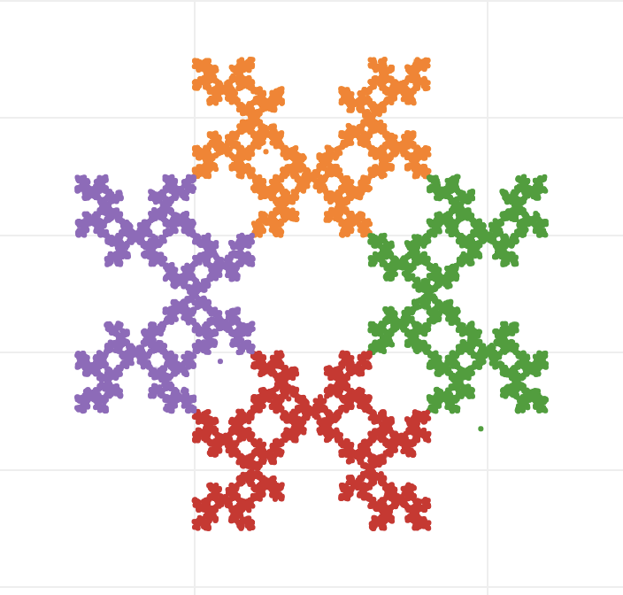

Chaos Game
Number of Vertices
Rule
Distance Factor
Iterations to step at once
Rule 1: picking one of the vertices and going into its direction (from previous iteration result) a factor of its distance (default 0.5)
Rule 2: rule 1, but unable to go towards the same vertex twice in a row
Rule 3: rule 1, but current chosen vertex cannot be 2 places away from the previous chosen vertex
Rule 4: rule 1, but if the same vertex has been chosen twice in a row, then the next cannot be its direct neighbour
Used plot library: Plotly
v = 3, r = 1, f = 0.5
v = 3, r = 2, f = 0.5
v = 4, r = 2, f = 0.5
v = 4, r = 3, f = 0.5
v = 4, r = 3, f = 0.66
v = 4, r = 4, f = 0.5
v = 5, r = 1, f = 0.5
v = 5, r = 2, f = 0.5
v = 5, r = 3, f = 0.5
v = 5, r = 3, f = 0.66
v = 5, r = 4, f = 0.5
v = 5, r = 4, f = 0.66
v = 6, r = 4, f = 0.5
v = 6, r = 4, f = 0.66
v = 7, r = 1, f = 0.66

v = 7, r = 2, f = 0.66
v = 7, r = 2, f = 0.66
v = 8, r = 1, f = 0.66
v = 8, r = 1, f = 0.5

v = 8, r = 3, f = 0.66